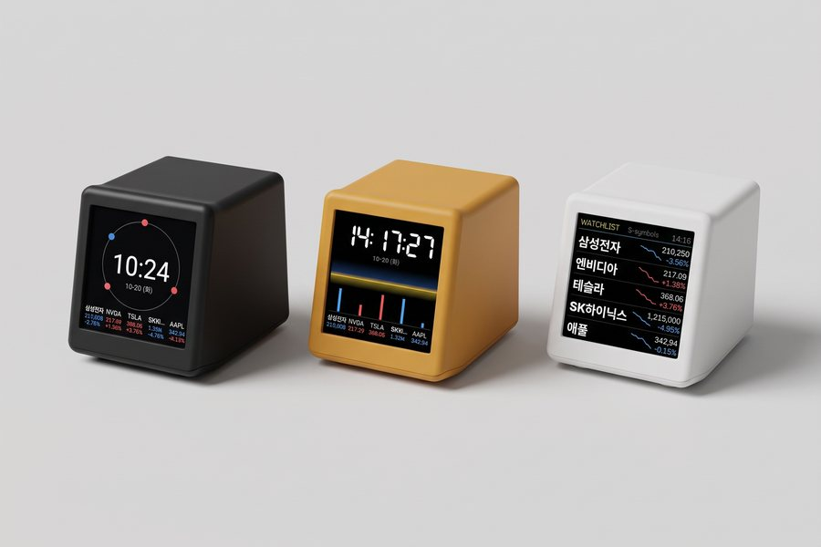
CHART TOTEM
차트토템 주식시계
세팅 가이드
처음 전원을 켜고 관심 종목을 띄우기까지 약 3분이면 끝나요.
준비물
- 차트토템 주식시계 본체와 동봉된 USB-C 케이블
- USB 전원: 휴대폰 충전기(5V)나 PC·모니터의 USB 포트. 충전기는 들어 있지 않아요.
- 집(사무실) Wi-Fi 이름과 비밀번호: 반드시 2.4GHz Wi-Fi여야 해요. 이름 끝에 5G가 붙은 Wi-Fi는 연결되지 않아요.
- 스마트폰: iPhone은 기본 카메라와 Safari, Android는 기본 카메라와 Chrome을 권장해요.
1전원 연결하기
기기 뒷면의 USB-C 포트에 케이블을 꽂고, 반대쪽을 충전기나 PC·모니터의 USB 포트에 꽂아 주세요. 몇 초 뒤 기기 화면에 「Wi-Fi 연결 1/2」와 QR 코드가 나타나요.
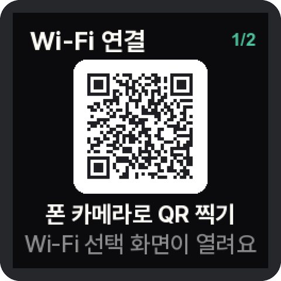
TIP차트토템은 배터리가 없는 상시 전원 제품이에요. 케이블을 꽂아 두는 동안 계속 켜져 있어요.
2기기 Wi-Fi에 접속하기
기기 화면의 QR은 차트토템이 잠시 만들어 둔 설정용 Wi-Fi에 접속하는 QR이에요. 폰 카메라로 찍으면 Wi-Fi 설정 화면이 자동으로 열려요.
iPhone
- 기본 카메라 앱을 열고 기기 화면의 QR을 비춰요.
- 화면 아래에 뜨는 「'ChartTotem-XXXX' 네트워크에 연결」 알림을 누르고 「연결」을 눌러요.
- 잠시 뒤 「Wi-Fi 연결」 창이 저절로 올라와요. 3단계로 넘어가세요.
Android (갤럭시 등)
- 기본 카메라 앱으로 QR을 비춰요. 반응이 없으면 카메라 설정에서 「QR 코드 스캔」을 켜거나, 빠른 설정의 QR 스캐너·Google 렌즈를 써 주세요.
- 「네트워크에 연결」(또는 「연결」)을 눌러요.
- 「Wi-Fi 네트워크에 로그인하세요」 알림이나 창이 뜨면 눌러요. 3단계 화면이 열려요.
- 「인터넷에 연결되어 있지 않습니다. 연결을 유지할까요?」라고 물으면 「예」(연결 유지)를 눌러요. 설정용 Wi-Fi는 인터넷이 없는 게 정상이에요.
설정 화면이 자동으로 안 열린다면?
폰이 설정용 Wi-Fi에 붙은 뒤 몇 초가 지나면 기기 화면이 「설정 페이지 열기 2/2」로 바뀌어요. 그 QR을 한 번 더 찍거나, 브라우저 주소창에 8.8.8.8 을 입력하세요.
3집 Wi-Fi 고르기
폰에 뜬 「Wi-Fi 연결」 화면에서 기기가 쓸 집 Wi-Fi를 고르고 비밀번호를 입력한 뒤 「연결」을 눌러요. iPhone과 Android가 같아요.
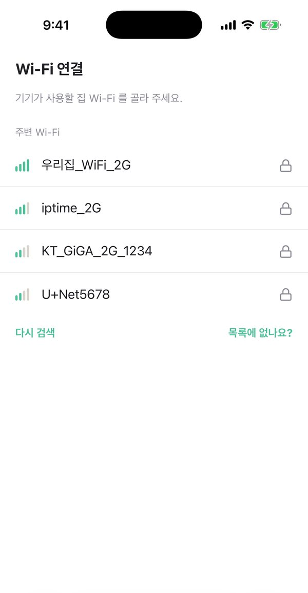
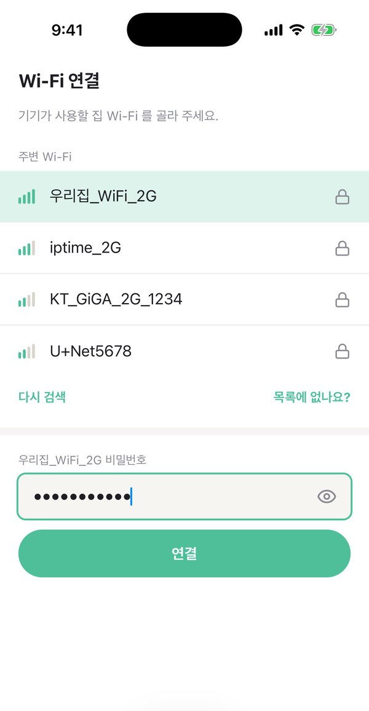
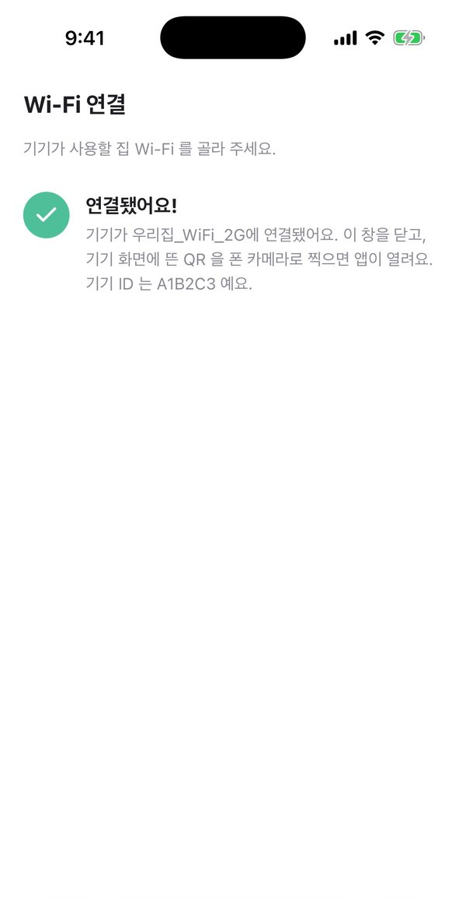
- 기기 화면에는 「Wi-Fi 연결 중」이 잠시 표시돼요.
- 「연결됐어요!」가 나오면 이 창을 닫아 주세요. 폰은 원래 쓰던 Wi-Fi나 데이터로 자동으로 돌아가요.
- iPhone은 창 오른쪽 위 「완료」, Android는 뒤로 가기나 X로 닫으면 돼요.
- 목록에 집 Wi-Fi가 없으면 「다시 검색」을 누르거나, 「목록에 없나요?」에서 이름을 직접 입력하세요.
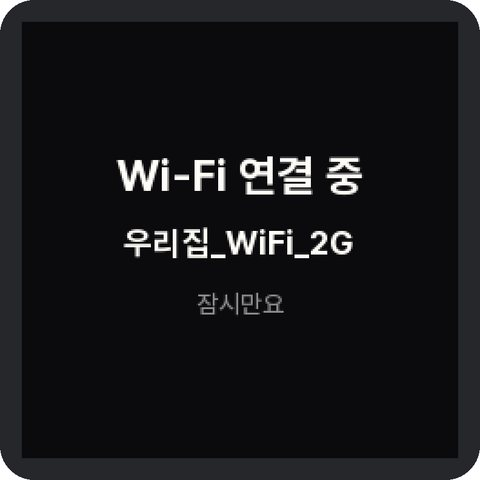
4앱과 기기 연결하기
Wi-Fi 연결이 끝나면 기기 화면이 「Wi-Fi 연결 완료」로 바뀌고, 새 QR과 기기 ID(영문·숫자 6자리)가 보여요.
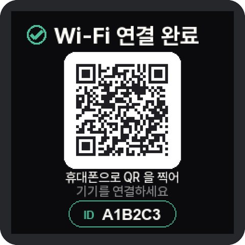
- 폰 카메라로 이 QR을 찍으면 차트토템 앱이 열리고, 「기기 연결」 화면에 ID가 자동으로 채워져요. 「다음」을 눌러요.
- 기기 화면에 「앱 연결 코드」 숫자 6자리가 떠요.
- 그 숫자를 앱에 입력하고 「연결」을 눌러요. 6자리를 모두 넣으면 자동으로 진행되기도 해요.
- 기기 화면에 「앱과 연결됐어요」가 나오면 끝이에요. 이제 집 밖에서도 앱으로 설정을 바꿀 수 있어요.
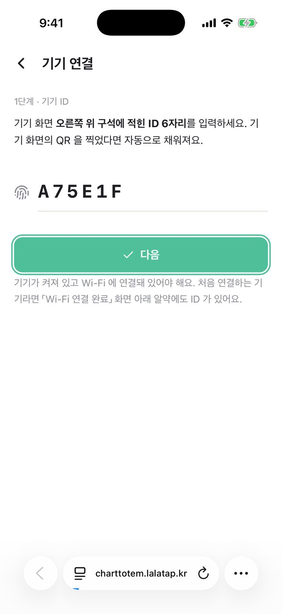
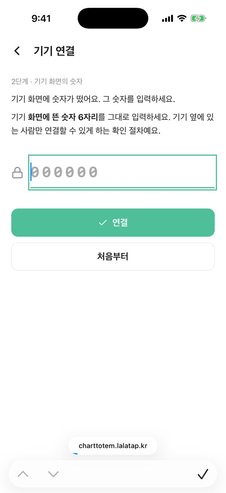
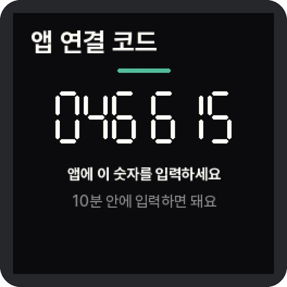
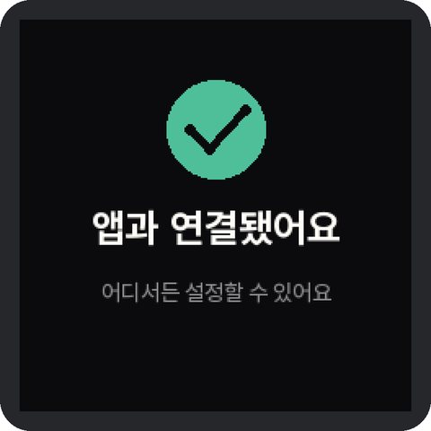
TIPQR을 찍기 어렵다면 아래 「차트토템 앱 열기」를 누르고 「기기 연결하기」에서 기기 ID를 직접 입력해도 돼요. 연결 코드는 10분 안에 입력해야 해요.
앱은 따로 설치하지 않는 웹 앱이에요. iPhone은 Safari, Android는 Chrome에서 여는 것을 권장해요.
5앱을 홈 화면에 추가하기
홈 화면에 추가해 두면 일반 앱처럼 아이콘을 눌러 바로 열 수 있어요.
iPhone
- Safari 아래쪽의 「···」(더 보기) 버튼을 누르고 「공유」를 눌러요. 예전 iOS는 아래쪽 공유 버튼(□↑)을 바로 누르면 돼요.
- 공유 메뉴를 위로 밀어 올려 「홈 화면에 추가」를 눌러요.
- 이름이 「차트토템」인지 확인하고 오른쪽 위 「추가」를 눌러요.
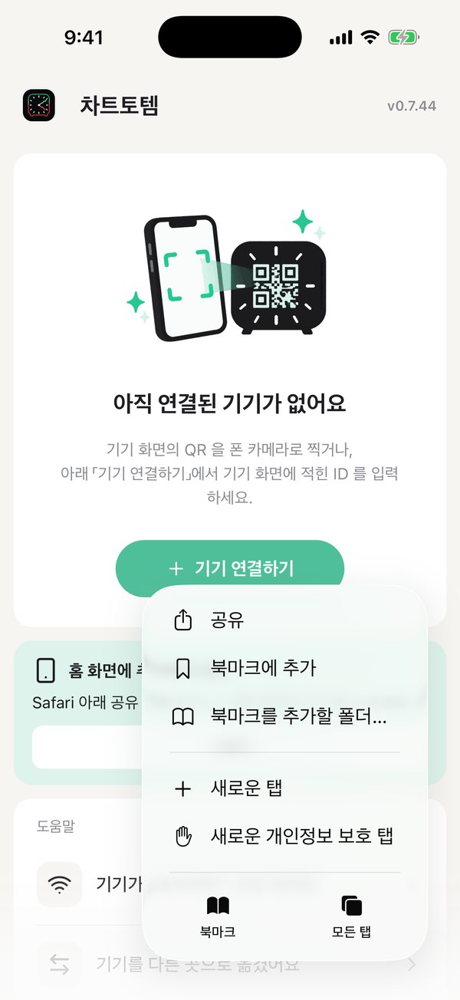
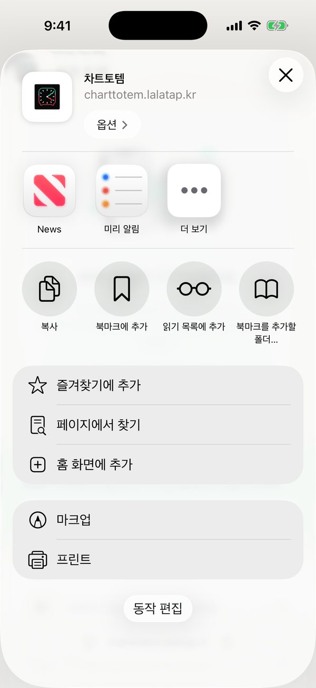
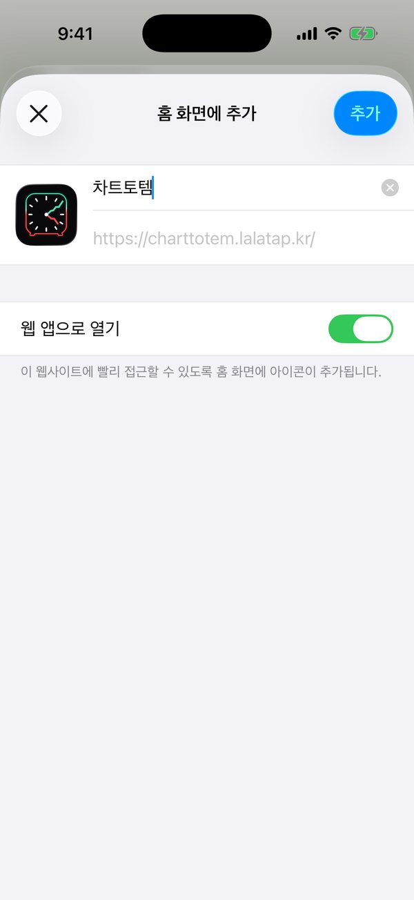
Android (갤럭시 등)
- Chrome 오른쪽 위 「⋮」 메뉴를 눌러요.
- 「홈 화면에 추가」(또는 「앱 설치」)를 누르고, 이어서 「설치」나 「추가」를 눌러요.
- 삼성 인터넷이라면 아래쪽 「≡」 메뉴 → 「현재 페이지 추가」 → 「홈 화면」을 눌러요.
6종목과 화면 고르기
앱 홈에서 「기기 설정」이나 「화면 관리」를 누르면 기기 화면을 내 마음대로 바꿀 수 있어요. 바꾼 내용은 따로 저장할 필요 없이 1~2초 안에 기기에 반영돼요.
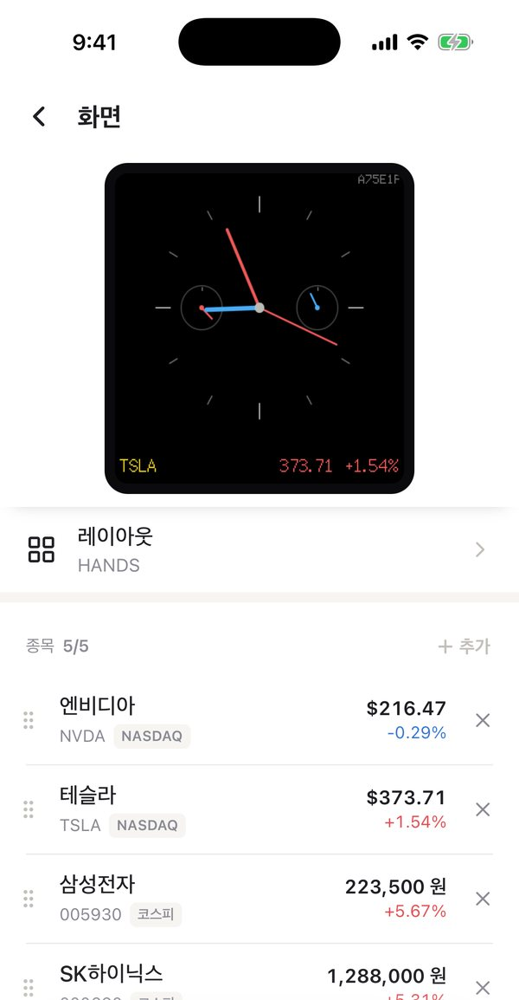
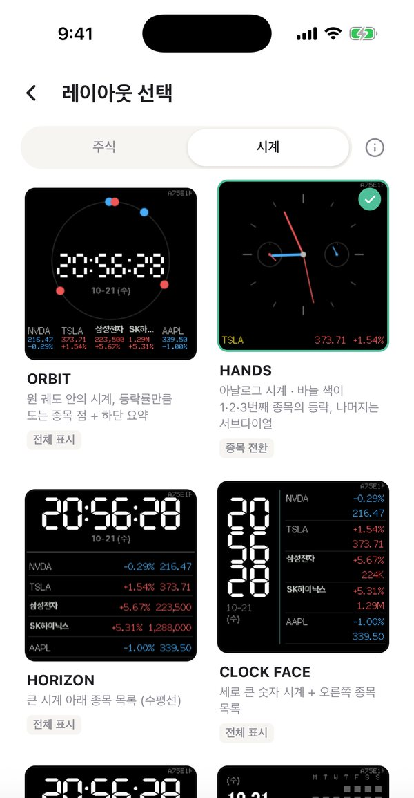
- 종목 추가: 종목 목록 오른쪽 위 「+ 추가」를 누르고 이름이나 코드로 검색해요. 국내 주식, 미국 주식, KODEX·TIGER 같은 ETF를 섞어서 최대 5종목까지 넣을 수 있어요.
- 순서 바꾸기·빼기: 종목 왼쪽 손잡이를 끌어 순서를 바꾸고, 오른쪽 ×로 목록에서 빼요.
- 레이아웃: 「레이아웃」을 눌러 주식형·시계형 중 마음에 드는 화면을 골라요.
- 세부 설정: 표시 항목(가격·등락률·초·날짜), 전환 간격, 등락 색(한국식 빨강 상승 / 글로벌식 초록 상승), 시간대, 밝기도 앱에서 바꿀 수 있어요.
시세는 네이버증권 시세를 받아와 보여 주기 때문에 약간의 지연이 발생할 수 있어요. 장이 닫혀 있을 때는 마지막 가격과 등락률을 보여 주고, 시계는 그대로 동작해요.
문제가 생겼을 때
QR이 안 찍혀요
기기와 폰 사이를 15~20cm 정도로 두고 다시 비춰 보세요. Android는 카메라 설정의 「QR 코드 스캔」을 켜거나 Google 렌즈로 찍어 보세요.
집 Wi-Fi가 목록에 안 보여요
차트토템은 2.4GHz Wi-Fi만 연결돼요. 공유기가 5GHz만 켜져 있다면 2.4GHz를 켜 주세요. 기기를 공유기 가까이에 두고 「다시 검색」을 누르거나, 「목록에 없나요?」에서 이름을 직접 입력해도 돼요.
「비밀번호가 틀린 것 같아요」가 나와요
대소문자와 특수문자를 다시 확인해 주세요. 입력칸 오른쪽 눈 모양을 누르면 비밀번호가 보여요.
앱에서 「기기를 찾을 수 없어요」가 나와요
기기 화면이 「Wi-Fi 연결 완료」나 시세 화면인지 확인해 주세요. 아직 Wi-Fi 연결 전이라면 2~3단계를 먼저 해 주세요. ID는 숫자와 A~F로 된 6자리예요.
연결 코드가 만료됐어요
코드는 10분 동안만 유효해요. 앱에서 「처음부터」를 누르면 새 코드가 떠요.
이사했거나 공유기를 바꿨어요
저장된 Wi-Fi를 찾지 못하면 기기 화면에 「Wi-Fi 를 못 찾았어요」와 QR이 떠요. 2~3단계와 같은 방법으로 새 Wi-Fi를 연결하면 돼요.
가족 폰에서도 설정하고 싶어요
다른 폰에서도 차트토템 앱의 「기기 연결하기」로 같은 기기를 연결할 수 있어요. 기기 화면 오른쪽 위 구석에 ID가 작게 적혀 있어요.
처음 상태로 되돌리고 싶어요
앱의 기기 설정 → 「시스템」 → 「기기 초기화」를 누르면 종목·화면 설정·Wi-Fi·앱 연결이 모두 지워지고 1단계 화면으로 돌아가요.